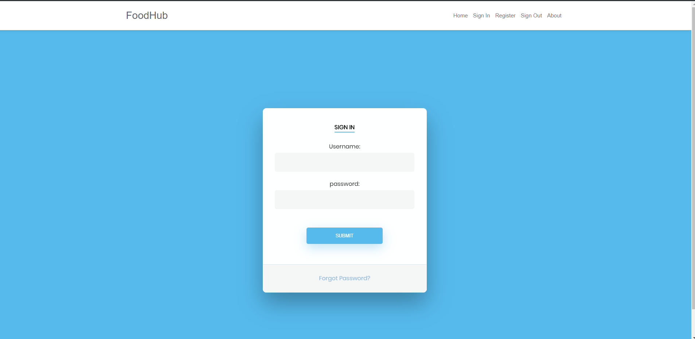
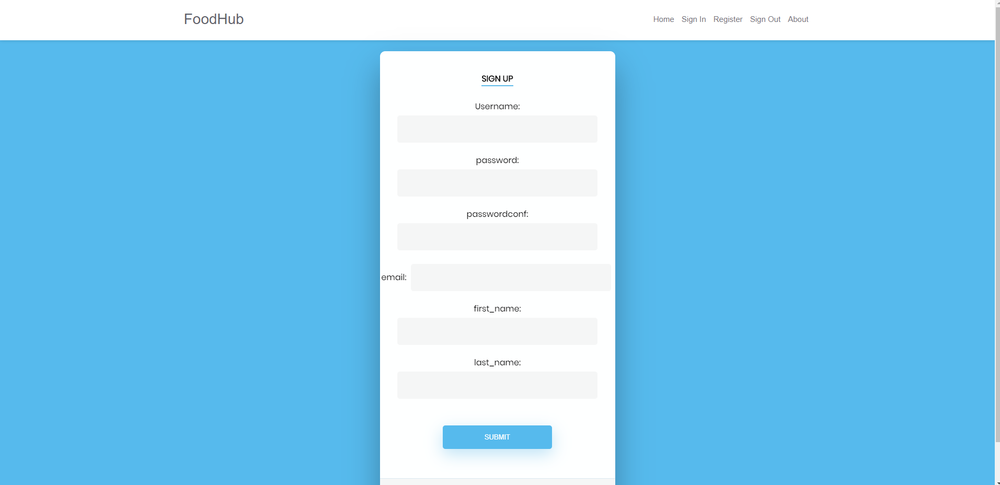
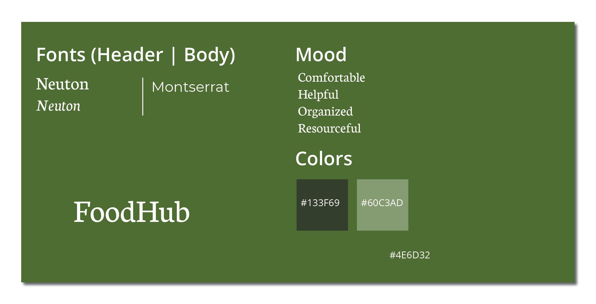

A foodbank application/system that registers meal program data that
creates an open portal for restaurants to sign in and opt in to donate
food to the homeless. Furthermore it's an application that spreads awareness
about these food donations to the homeless communities through a number of
helpful and effective outlets; kiosks, text
Problem Statement
Globally 1.3 billion tons of food supply is wasted annually
more than one-third of the earth’s food, according to the Food and Agriculture
Organization of the United Nations. Meanwhile, according to the USDA, Washington
State has the 9th highest level of hunger in the nation, 39% of people served by
Washington food banks are children. Furthermore, there are chronic hunger problems
within the Seattle homeless population & food wastage.
Accessibility problem in connecting homeless and low-income people with resources
due to technical limitations
Accessibility problem in connecting homeless and low-income people with resources due to technical limitations.
Current Resources
FOOD 2-1-1 Dial Service: provides information about school lunch programs and summer food service programs for children
Food LifeLine: Food Lifeline has three methods of distribution that deliver rescued food to our partner agencies quickly and efficiently.
Food Connection: Food bank that provides food to various communities through different organizations including the St.Leo Food Bank, Springbook Mobile Food Bank, and Food Rescue.
Solution Proposal
Foodhub will a foodbank application/system that registers meal program data that creates an
open portal for resaurants to sign in and opt in to donate food to the homeless. Furthermore it's an application that spreads
awareness about these food donations to the homeless communities through a number of helpful and effective outlets; kiosks, text.
Our design will intervene to increase accessibility to vulnerable populations.
Our restaurant side website will register interested restaurants and we will use
seattle.data.gov's food safety rating API to verify the details of the restaurant and the
quality of their food. Once they get accepted, they will be able to donate food.
We have a 3-pillar information delivery method. We have text and call capability. We also
have a kiosk which updates in real time.
Projected Benefits
More of the homeless population will receive effective awareness regarding readily available locations and resources.
Furthermore, this application would promote efficient sustainability and reduced waste.
Lastly, it helps reduce the likelihood of the homeless population dying form starvation, thus less homeless wandering around for food.
Wireframe/Prototyping
User Personas/Research
Our primary stakeholders are the hungry homeless population.
Secondary stakeholders are resaurants and households that distribute food and shelter the homeless.
Lo-Fi Designs


Kiosk Design + User Flow
Design Rationale

Reflection
Working on this project helped me expand my design critiques and skills when approaching every milestone in the design process.
With countless iterations and user personas, it helped guide myself as a designer to effectively comprehend and understand what I was truly designing
for. An important skill to have as a designer is to fully grasp and understand the scope of needs that the audience possesses. Understanding what to do
along with who is it for is crucial to keep in mind as it well help improve the design process as well!